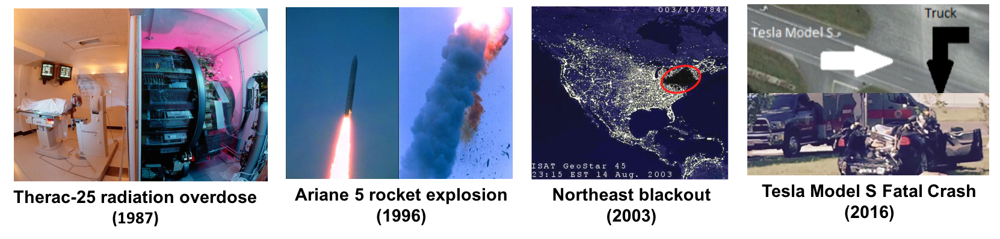

Dependable Computing Systems
ECE/CS 4434/6434
Fall 2023

Computing systems are used in various critical domains including aerospace, energy, transportation, healthcare, and commerce.
Failures of these systems may lead to catastrophic consequences such as injury, loss of life, damage to equipment, or financial loss.
This course focuses on techniques for designing and analyzing dependable computing systems that can continue to operate correctly in the
presence of software and hardware problems. We will learn what can go wrong, how we can predict, prevent, and detect faults/errors, and
how we can design systems that can tolerate faults and recover from failures.
Topics:
- Introduction to dependable computing
- Basic terminology, attributes, and evaluation techniques
- Combinatorial and state-space modeling
- Hardware fault tolerance
- Information redundancy
- Software fault tolerance
- Checkpointing and recovery
- Reliable networked systems
- Error detection techniques
- Dependability evaluation techniques
- Safety and Security
Time: Mon/Wed 2:00 - 3:15pm
Location: Rice Hall 340
Instructor Office Hours: TBD or by appointment
TA Office Hours: TBD
UVA Canvas Site (For lecture notes, homework submission, grading)
Piazza (For questions, discussions, and polls)
Pre-requisites: This course is intended for graduate and senior-level undergraduate students. A basic knowledge of probability and computer architecture is required. A working knowledge of programming is required for homework and final project.
Grading:
| Class Participation/Activity | 5% |
| Presentations: | |
| -- Short presentations on real-world reliability/safety/security incidents/issues | UG: 5% - GRAD: 5% |
| -- Paper Presentations | UG: 0% - GRAD: 10% |
| Homework | UG: 25% - GRAD: 15% |
| Final Project | 30% |
| Midterm Exam | 15% |
| Final Exam (Take Home) | 20% |
References:
- I. Koren and C. Mani Krishna, Fault-tolerant Systems, 1st edition, 2007, Morgan Kaufmann (Available here through UVA Library).
- J. Knight, Fundamentals of Dependable Computing for Software Engineers, 2012, CRC Press (Available here through UVA Library).
- K. Trivedi, Probability and Statistics with Reliability, Queuing and Computer Science Applications, 2nd edition, 2001, John Wiley & Sons (Available here through UVA Library).
- D. K. Pradhan, Fault Tolerant Computer System Design, 1st edition, 1996, Prentice-Hall.
- B. W. Johnson, Design and Analysis of Fault Tolerant Digital Systems, 1988, Addison-Wesley Longman Publishing Co.